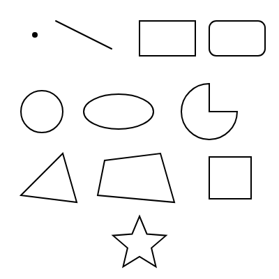

5. 図形の描画
この章では、p5.js で図形を描く関数を紹介します。
5.1. 基本図形
よく使う図形の関数を次の表に示します。引数はすべてピクセル単位です。
関数 |
描く図形と引数 |
|---|---|
|
点 |
|
始点 \((x_1, y_1)\) から終点 \((x_2, y_2)\) への線 |
|
左上の角が \((x, y)\) で、幅 \(w\)、高さ \(h\) の長方形 |
|
左上の角が \((x, y)\) で、一辺が \(s\) の正方形 |
|
中心が \((x, y)\) で、幅 \(w\)、高さ \(h\) の楕円 |
|
中心が \((x, y)\) で、直径 \(d\) の円 |
|
楕円の一部（円弧）。 |
|
3 つの頂点を結ぶ三角形 |
|
4 つの頂点を結ぶ四角形 |
rect() は左上の角を、circle() と ellipse() は中心を基準に位置を指定する点に注意してください。基準は rectMode() と ellipseMode() で変更できます。たとえば rectMode(CENTER) とすると、rect() の最初の 2 つの引数が長方形の中心を表すようになります。
circle() の 3 番目の引数は半径ではなく直径です。
図形は、コードに書いた順に重ねて描かれます。後から描いた図形が、先に描いた図形の上に重なります。
5.2. 角度の指定
arc() の角度は、既定では ラジアン で指定します。角度 0 は右方向（x 軸の正の向き）で、y 軸が下向きであるため、角度が増えると時計回りに進みます。
よく使う角度は定数として用意されています。
定数 |
値 |
度数法 |
|---|---|---|
|
\(\pi / 4\) |
45 度 |
|
\(\pi / 2\) |
90 度 |
|
\(\pi\) |
180 度 |
|
\(2\pi\) |
360 度 |
度数法で指定したいときは、angleMode(DEGREES) を呼びます。度数法とラジアンの変換には radians() と degrees() も使えます。
5.3. 自由な形
beginShape() と endShape() の間で vertex() を呼ぶと、頂点を自由に並べた多角形を描けます。endShape(CLOSE) とすると、最後の頂点と最初の頂点が結ばれて、図形が閉じます。
1beginShape();
2vertex(100, 50);
3vertex(150, 150);
4vertex(50, 150);
5endShape(CLOSE);
ループの中で vertex() を呼べば、計算で求めた頂点を並べられます。半径 \(r\)、中心 \((c_x, c_y)\) の円周上で角度 \(\theta\) の位置にある点は、次の式で求められます。
5.4. サンプル
基本図形と、上の式を使って描いた星形を並べたサンプルです。星形は、外側の頂点と内側の頂点を交互に 10 個並べて描いています。
1// 基本的な図形を並べて描くスケッチ
2
3function setup() {
4 createCanvas(400, 400);
5 noLoop(); // 静止画なので draw() は 1 回だけ実行する
6}
7
8function draw() {
9 background(255);
10
11 // 点（線の太さを大きくしないと見えにくい）
12 strokeWeight(8);
13 point(50, 50);
14
15 // 線（始点の座標、終点の座標）
16 strokeWeight(2);
17 line(80, 30, 160, 70);
18
19 // 長方形（左上の座標、幅、高さ）
20 rect(200, 30, 80, 50);
21 // 5 番目の引数で角を丸める
22 rect(300, 30, 80, 50, 10);
23
24 // 円（中心の座標、直径）と楕円（中心の座標、幅、高さ）
25 circle(60, 160, 60);
26 ellipse(170, 160, 100, 50);
27
28 // 円弧（中心の座標、幅、高さ、開始角、終了角、描き方）
29 arc(300, 160, 80, 80, 0, PI + HALF_PI, PIE);
30
31 // 三角形と四角形（頂点の座標を順に指定する）
32 triangle(30, 280, 90, 220, 110, 290);
33 quad(150, 230, 230, 220, 250, 290, 140, 280);
34
35 // rectMode(CENTER) にすると、長方形を中心の座標で指定できる
36 rectMode(CENTER);
37 rect(330, 255, 60, 60);
38 rectMode(CORNER); // 既定値に戻す
39
40 // 頂点を自由に並べた図形（星形）
41 beginShape();
42 for (let i = 0; i < 10; i++) {
43 const angle = -HALF_PI + (i * TWO_PI) / 10;
44 const r = i % 2 === 0 ? 40 : 18; // 外側と内側の頂点を交互に置く
45 vertex(200 + r * cos(angle), 350 + r * sin(angle));
46 }
47 endShape(CLOSE); // CLOSE で最後の頂点と最初の頂点をつなぐ
48}
ダウンロード：
index.html、sketch.js


図 5.1 サンプルの実行結果
29 行目の arc() は、角度 0 から \(3\pi/2\)（270 度）までの円弧を描きます。最後の引数 PIE は、円弧の両端と中心を結んで扇形にする指定です。